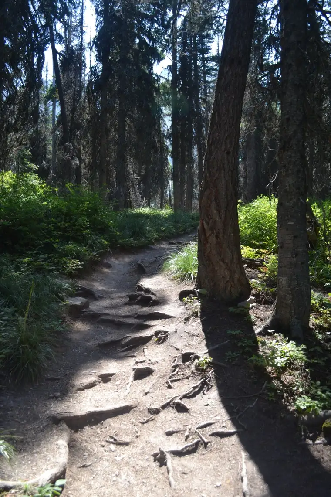
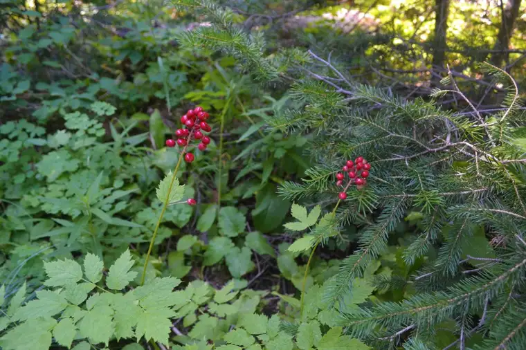
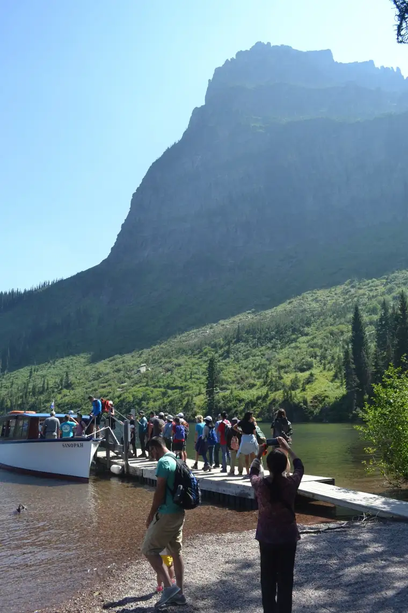
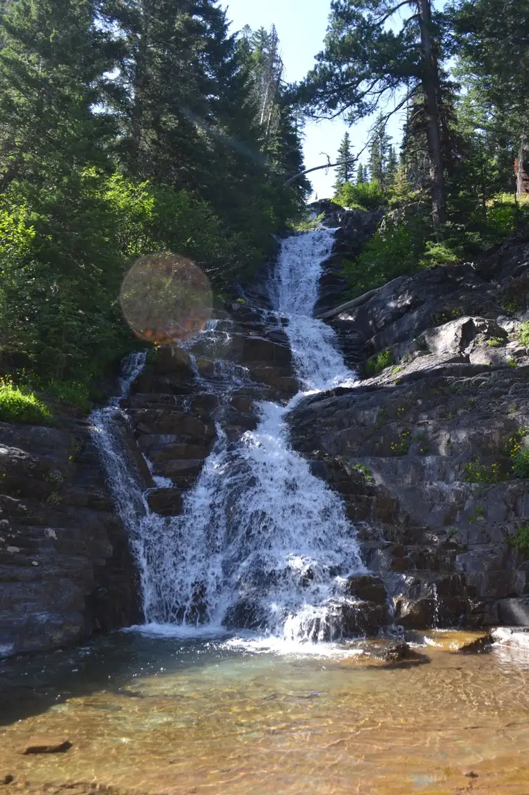
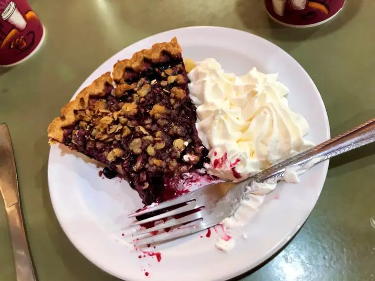

On Aug. 2, my husband came to dinner with his phone, the alarm sounding. Exactly three months earlier, he’d reminded, we’d visited him in a post-op wing of St. Mary’s Hospital in Rochester, Minn.
That day in May, the Warfarin, or rat poison, to prevent blood clotting after heart surgery, had been ordered. The alarm signaled his final dose.
Thirty-four hours later, six of us seven Salonens departed by Amtrak in downtown Fargo for a late-planned, celebratory adventure to Glacier National Park. Despite growing up in the shadows of the Rocky Mountains in Poplar, Mont., I’d never been there, and excitedly anticipated long-awaited sights.

It was also my deceased father’s birthday; the man who’d first introduced Montana to me, and who, as the youngest son of a North Dakota railroad worker, had been transfixed by trains. At the first click-clack of wheels on tracks, I sensed both Dad and God near.
We snoozed away until sunlight finally reached our sleepy eyes around Minot. There, I recalled how my father had served in the Air Force here, attended college and welcomed his first daughter. As we chugged westward, golden waves of grain against rolling hills seemed like Dad blowing me a kiss.

Glacier itself brought a spectacular display of beauty only God could have dreamed up. At Two Medicine, sitting at the base of Rising Wolf Mountain midday, I found words in my devotional from Psalm 76 impeccably timed and humbling: “You, O Lord, are resplendent, more majestic than the everlasting mountains.”


Saint Basil the Great provided further inspiration: “What is more marvelous than the divine beauty…more likely to give pleasure than the magnificence of God?”


Like any family trip, ours brought moments of tension, especially in sharing a single bathroom at our Air B&B. Yet God’s bounteous hand was as clear as the water cascading down rustic rocks at Twin Falls, and gratitude abounded.

The final treasure came when a childhood friend, now living nearby, met me at the lodge of our shuttle drop-off. “Is it really you?” she asked as I waved from across the lobby, spotting her in a chair.
It had been over 30 years, and the intensity of her hug made me know instantly where she stood with our friendship. Catching up over huckleberry pie, we laughed and cried deeply.

All those years ago, meeting on the playground, we couldn’t have imagined the suffering life would bring. Now, broken but blessed, we found ourselves bound forever by our good God; the exchange of raw tears, revealing losses and loves, providing a shared keepsake.

In parting, she pressed a beaded hummingbird into my hand as a gift, saying starkly, “Roxi, we might not see each other again until after we die.”
Her hard but wise reminder of life’s brevity brought an urgent message to my heart: “Seek God now, for he is real and everywhere, and he alone can heal and save.”
[For the sake of having a repository for my newspaper columns and articles, I reprint them here, with permission, a week after their run date. The preceding ran in The Forum newspaper on Aug. 19, 2019.]